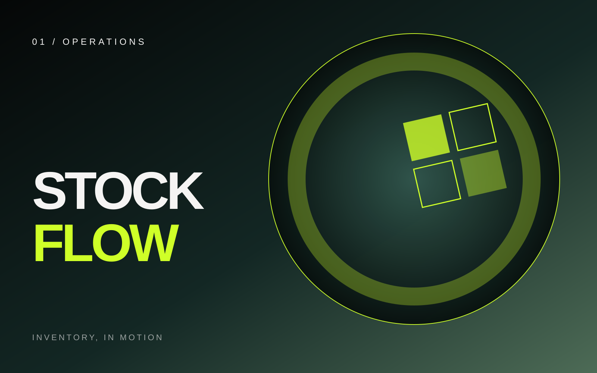
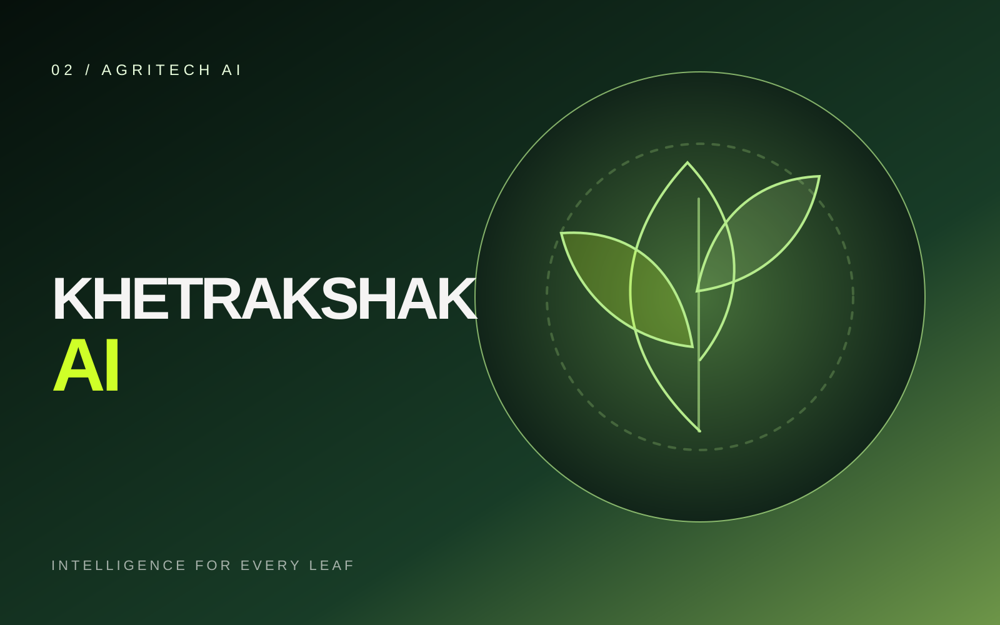
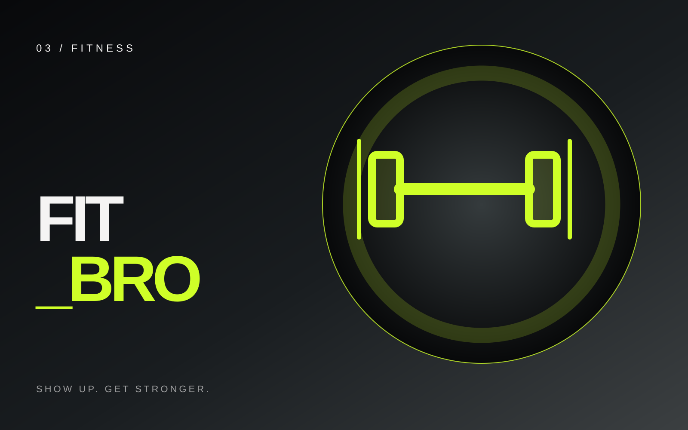
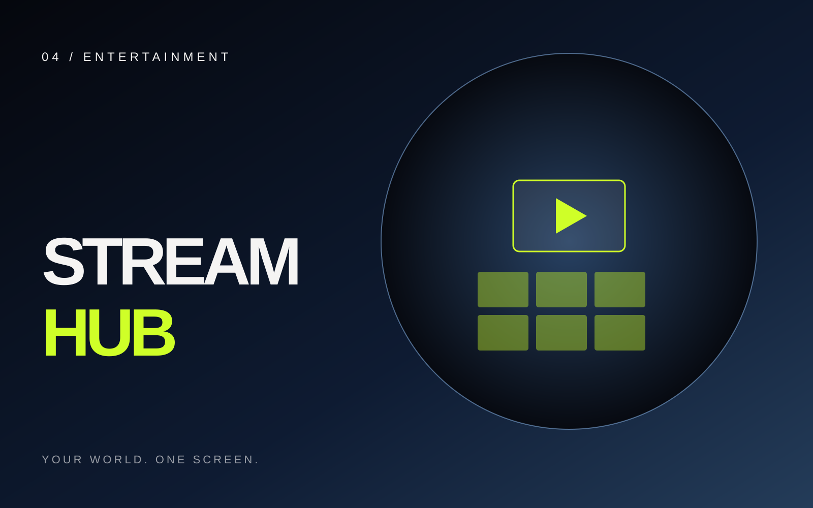

<!-- TCP SECTION 03 — THE OUTPUT (vanilla HTML/CSS/JS; replaces ONLY the old #projects section) -->
<section id="projects" class="tcp-output-section" aria-label="The Output — selected projects">
  <div class="tcp-output-backdrop" aria-hidden="true"></div>

  <div class="tcp-output-topline" aria-hidden="true">
    <span>03</span>
    <span>THE OUTPUT</span>
    <span class="tcp-output-topline-rule"></span>
  </div>

  <div class="tcp-output-layout">
    <div class="tcp-output-carousel" data-tcp-output-carousel aria-label="Selected project carousel">
      <button class="tcp-output-nav tcp-output-nav--prev" type="button" data-output-prev aria-label="Previous project">
        <span aria-hidden="true">←</span>
      </button>

      <div class="tcp-output-viewport" data-output-viewport tabindex="0" role="region" aria-label="Project cards. Use left and right arrow keys to navigate.">
        <div class="tcp-output-track" data-output-track>
          <button class="tcp-output-card" type="button" data-project-index="0" aria-label="Select StockFlow">
            <span class="tcp-output-card-art"></span>
          </button>
          <button class="tcp-output-card" type="button" data-project-index="1" aria-label="Select Khetrakshak AI">
            <span class="tcp-output-card-art"></span>
          </button>
          <button class="tcp-output-card" type="button" data-project-index="2" aria-label="Select FIT_BRO">
            <span class="tcp-output-card-art"></span>
          </button>
          <button class="tcp-output-card" type="button" data-project-index="3" aria-label="Select Stream Hub">
            <span class="tcp-output-card-art"></span>
          </button>
        </div>
      </div>

      <button class="tcp-output-nav tcp-output-nav--next" type="button" data-output-next aria-label="Next project">
        <span aria-hidden="true">→</span>
      </button>
    </div>

    <div class="tcp-output-caption" aria-live="polite" aria-atomic="true">
      <div class="tcp-output-caption-copy">
        <span class="tcp-output-project-type" data-output-type>OPERATIONS / WEB PLATFORM</span>
        <h2 data-output-title>StockFlow</h2>
      </div>
      <div class="tcp-output-caption-side">
        <span class="tcp-output-counter"><span data-output-current>01</span><span class="tcp-output-counter-divider">/</span><span>04</span></span>
        <div class="tcp-output-caption-arrows" aria-hidden="true"><span>DRAG OR USE ARROWS</span><span class="tcp-output-caption-line"></span></div>
      </div>
    </div>
  </div>
</section>
